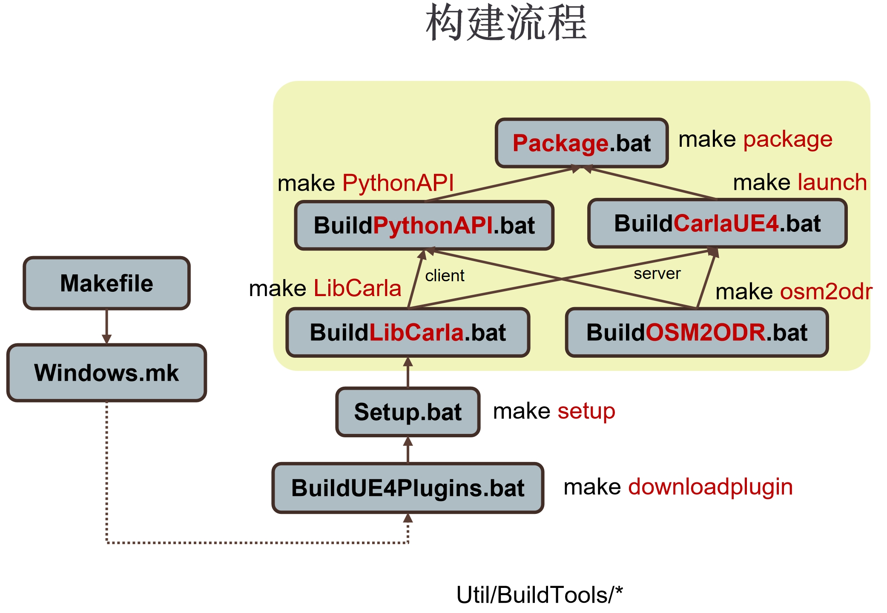

各模块文档¶

一、Carla库：LibCarla¶
- 客户端 client
- 几何变换 geom
- 图像 image
- 多GPU multigpu
- 导航 nav
- 路网 opendirve
- 点云 pointcloud
- 性能分析器 profiler
- 深度模型 pytorch
- 道路 road
- 机器人操作系统 ros2
- 远程过程调用 rpc
- 责任敏感安全 rss
- 传感器 sensor
- 流式传输 streaming
- 交通管理器 trafficmanager
二、虚幻插件：CarlaUnreal¶
- 参与者 Actor
- 人工智能 AI
- 蓝图库 BlueprintLibary
- 命令 Commandlet
- 游戏 Game
- 灯光 Lights
- 地图生成 MapGen
- 数学 Math
- 路网 OpenDrive
- 记录器 Recorder
- 传感器 Sensor
- 服务端 Server
- 设置 Settings
- 交通 Traffic
- 触发器 Trigger
- 工具 Util
- 植被 Vegetation
- 车辆 Vehicle
- 行人 Walker
- 天气 Weather
三、虚幻场景：carla-content¶
3.1 蓝图 Blueprints¶
- 游戏 Game
- 关卡设计 LevelDesign
- 灯光 Lights
- 道具 Props
- 测试 Testing
- 交通灯 TrafficLight
- 通用场景描述(USD) 资产导入模板 USDImportTemplates
- 车辆 Vehicles
- 行人 Walkers
3.2 静态资产 Static¶
附加¶
通用C++相关文档请参考 链接 。
构建步骤分析¶
编译：Util/BuildTools/*¶

- BuildUE4Plugins.bat : 构建虚幻引擎插件 StreetMap
- Setup.bat：调用
Util/InstallersWin/*.bat下载并生成 zlib、libpng、rpclib、Google Test、Recast & Detour、Fast-DDS (for ROS2)、Boost、Xercesc、Sqlite3、PROJ、Eigen、Chrono 库；设置资产下载URL；生成CMakeLists.txt.in； - BuildLibCarla.bat：创建LibCarla的客户端和服务端；
- BuildOSM2ODR.bat：创建OSM转OpenDRIVE的库；
Update.bat¶
- 环境变量初始化；
- 获取最新的资产包；
-
下载并解压资产内容；
如果不存在7zip就用
powershell -Command "Expand-Archive '命令进行解压。
Makefile¶
-
make PythonAPI执行
Util/BuildTools/BuildPythonAPI.bat，真正执行的是python setup.py bdist_egg bdist_wheel，在PythonAPI/carla/dist目录下生成*.egg和*.whl文件； -
make launch执行
Makefile，调用Util/BuildTools/Windows.mk，真正执行的是BuildLibCarla.bat，构建LibCarla的服务端和客户端；
Build¶
Xerces是由 Apache 组织所推动的一项 XML 文档解析开源项目。SQLite是一款轻型的数据库，是遵守 ACID 的关系型数据库管理系统，它包含在一个相对小的C库中。PROJ是一种通用坐标转换软件，它将坐标从一个坐标参考系（CRS）转换为另一个坐标参考系。这包括地图投影和大地坐标变换。